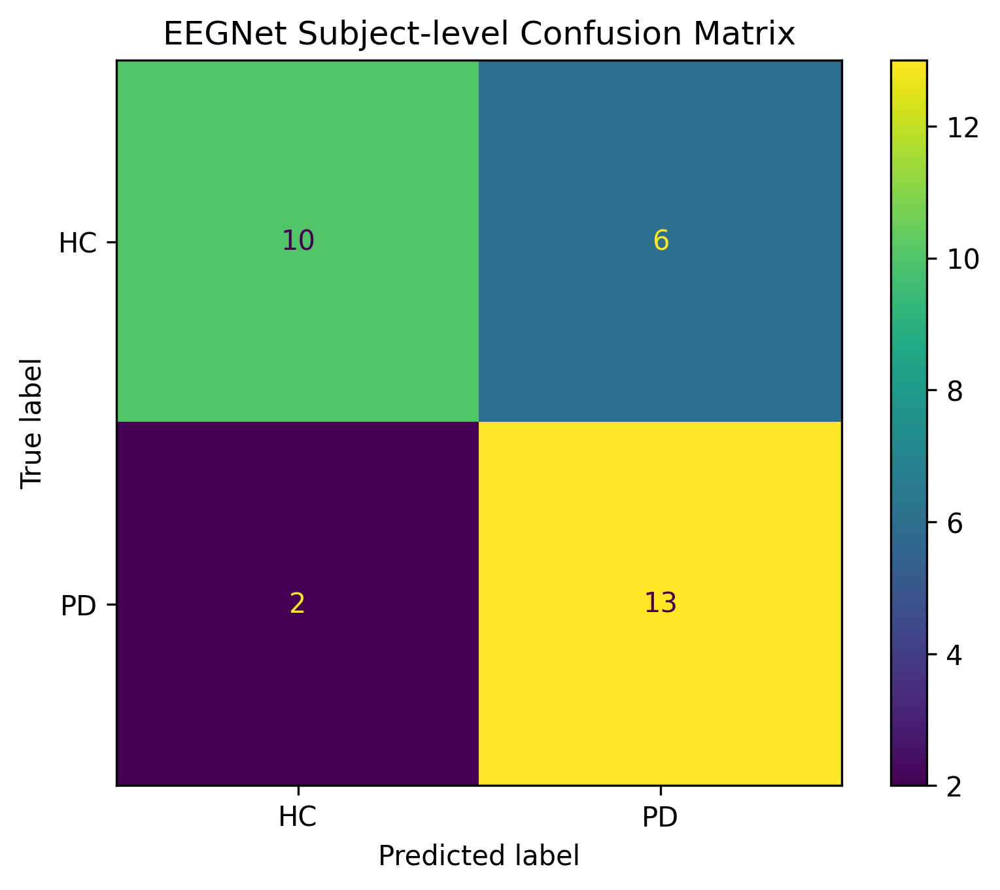
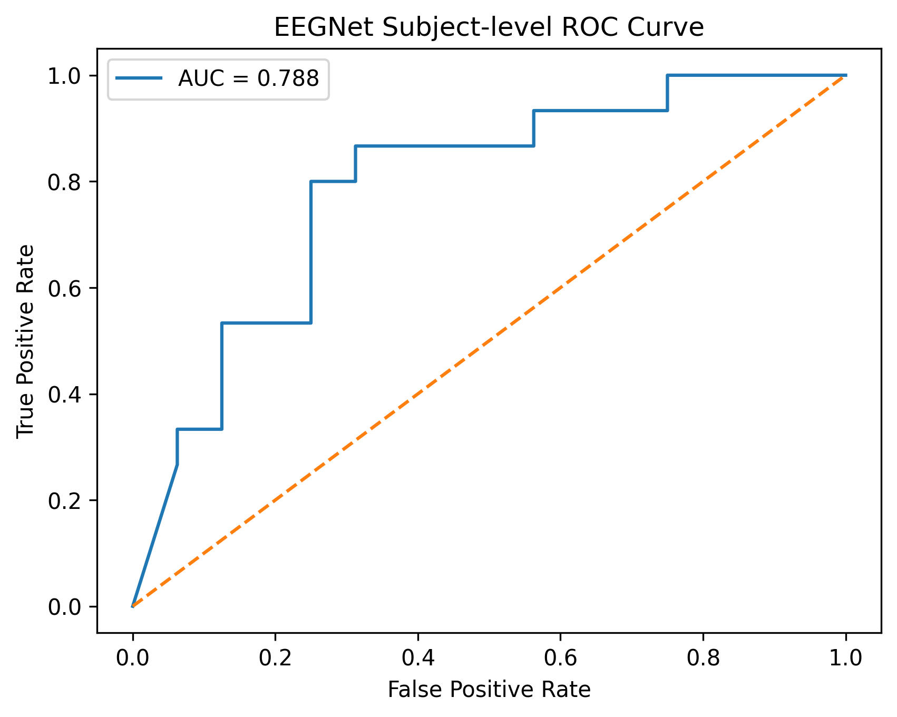

Reliable Parkinson’s Disease Detection from EEG using Strict Subject-Wise Validation
"Hypothesis/Project Statement: Subject-independent validation using LOSO provides realistic performance estimates for EEG-based Parkinson’s detection compared to inflated subject-dependent cross-validation."
Introduction & Motivation
Parkinson’s Disease (PD) is a progressive neurodegenerative disorder affecting millions globally. Early diagnosis is challenging due to the subjective nature of clinical assessments.
EEG (Electroencephalography) offers a non-invasive, cost-effective biomarker. However, different validation strategies can significantly influence reported performance. This work adopts strict subject-level separation (LOSO) to ensure generalization to unseen individuals.
Research Objective
To develop a reliable, interpretable deep learning framework (EEGNet) for PD detection that is validated using a strictly subject-independent (Leave-One-Subject-Out) protocol, ensuring real-world applicability.
The Critical Issue
"Window-wise cross-validation" can lead to data leakage. Models may memorize subject-specific EEG signatures rather than learning disease features. We address this by strictly separating subjects.
Literature Review
| Study | Model | Validation Strategy | Reported Accuracy | Limitation |
|---|---|---|---|---|
| Oh et al. (2020) | 1D CNN | Window-wise CV | 99.5% | Data Leakage / Overfitting |
| Shaban (2021) | ANN | Window-wise CV | 98.0% | Subject Mix |
| Wagh et al. (2022) | GNN | LOSO (Subject-wise) | ~69.0% | Realistic but lower |
| Our Work | EEGNet | Strict LOSO | 74.58% | Balanced & Reliable |
"Performance significantly drops when strict subject-level validation is applied, revealing the true generalization capability of models."
Materials & Methodology
Dataset Details
- Source: OpenNeuro (
ds002778) - Subjects: 31 Total (15 Parkinson’s Disease, 16 Healthy Controls).
- Modality: Resting-state EEG (eyes open & closed).
- Format: BIDS (Brain Imaging Data Structure).
- Hardware: 40-channel EEG cap @ 512 Hz sampling rate.
Preprocessing Pipeline
- Filtering: 1–40 Hz Bandpass filter (Butterworth, 4th order).
- Referencing: Average re-referencing to remove common noise.
- Windowing: 3-second epochs w/ 50% overlap.
- Data Shape: 1536 samples per window × 40 channels.
- Total Samples: 5964 labeled windows.
EEGNet Architecture
We utilize EEGNet, a compact Convolutional Neural Network designed specifically for brain signals. Unlike heavy models (ResNet/VGG), EEGNet calculates temporal and spatial features efficiently with only ~2.6K parameters, reducing overfitting on small medical datasets.
Block 1: Temporal Convolution
Learns frequency filters (like bandpass) from raw EEG.
Block 2: Depthwise Spatial Conv
Learns spatial patterns across 40 electrodes.
Block 3: Separable Convolution
Combines features efficiently => Sigmoid Classification.
Model Complexity
2,634
Total Parameters
Validation Strategy (Core Contribution)
Strict Leave-One-Subject-Out (LOSO)
Why Window-wise CV fails:
Standard validation randomly splits windows. This allows windows from "Subject A" to exist in both training and testing sets. The model learns to recognize "Subject A's" bio-signature instead of Parkinson's features, leading to high but potentially misleading accuracy.
Our Protocol
- Train on 30 Subjects
- Test on 1 Held-out Subject
- Repeat 31 times & Average
Research Workflow
Raw EEG Data
Preprocessing and Windowing
Subject-Level Aggregation
Evaluation / Metrics
Results & Analysis
Validated using strict Leave-One-Subject-Out cross-validation on 31 subjects
Balanced Accuracy
0
AUC
0
Sensitivity
0
Specificity
0
Window vs Subject
Different validation splits show performance gap.
Baseline Comparison
+3.12% improvement over standard spectral features.
Spectral Insight
Beta Band (13-30 Hz) dominance was observed in the learned filters, aligning with clinical literature on Parkinsonian resting tremors.
Confusion Matrix (Subject-Level)
High sensitivity for Parkinson’s detection (86.67%) with moderate specificity (62.5%).
Receiver Operating Characteristic
AUC = 0.7875 under strict Leave-One-Subject-Out validation.
Limitations
- Sample Size: Limited to 31 subjects (15 PD, 16 HC), which impacts statistical power.
- Single Dataset: Validated only on OpenNeuro ds002778; external validation is needed.
- Modality: Relies solely on EEG; fusing with MRI/Voice could improve sensitivity.
Future Work
Future work will extend this framework toward multi-center validation, enhanced interpretability analysis, and journal-level expansion of the current methodology.
Publication Status
Accepted for presentation at:
International Conference on Intelligent Computing and
Communication (ICICC 2026)
Paper ID: ICICC2026-V015
Author: Mahir Desai
Guide: Dr. Juhi Singh
Academic Credits
Project Guide
Dr. Juhi Singh
Team Member 1
Mahir Desai
23FE10CSE00345